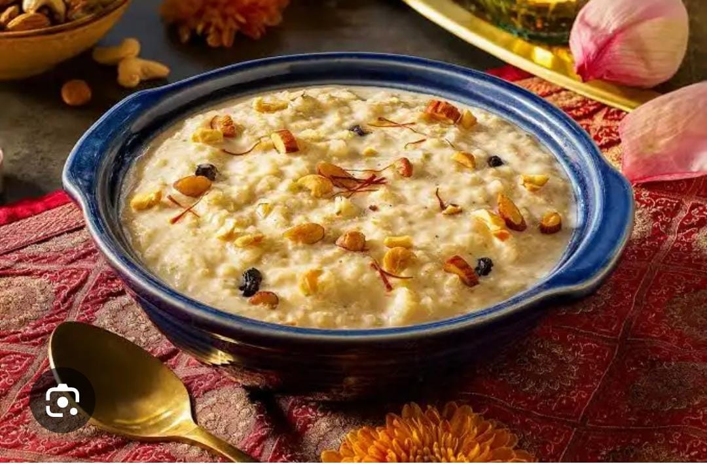
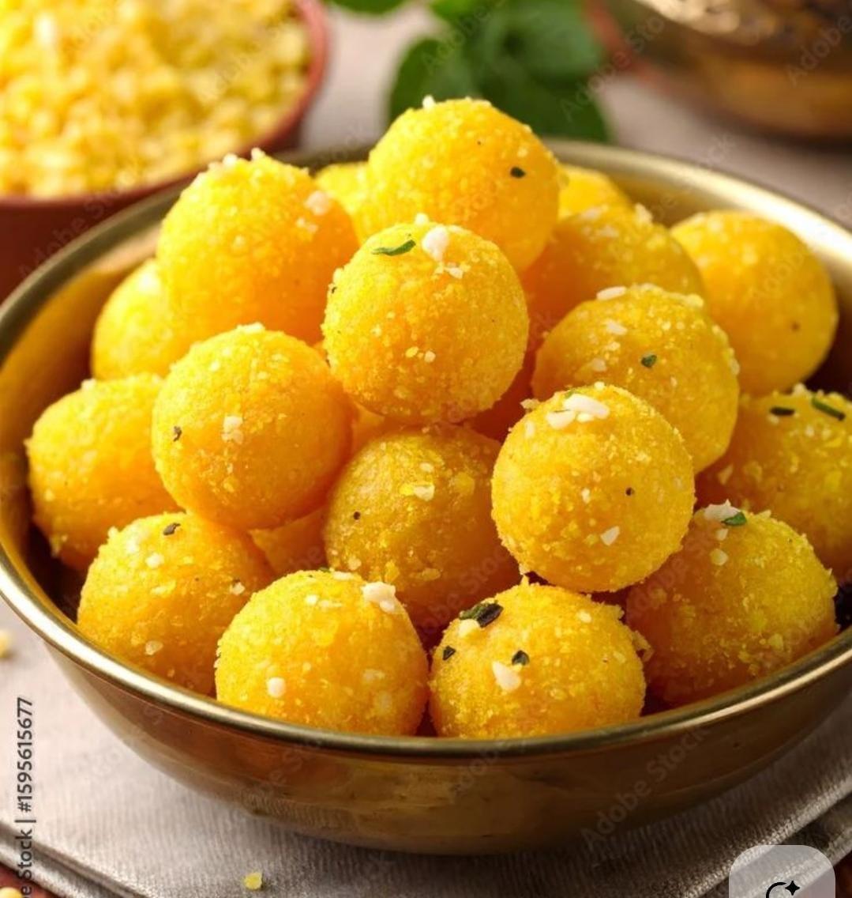
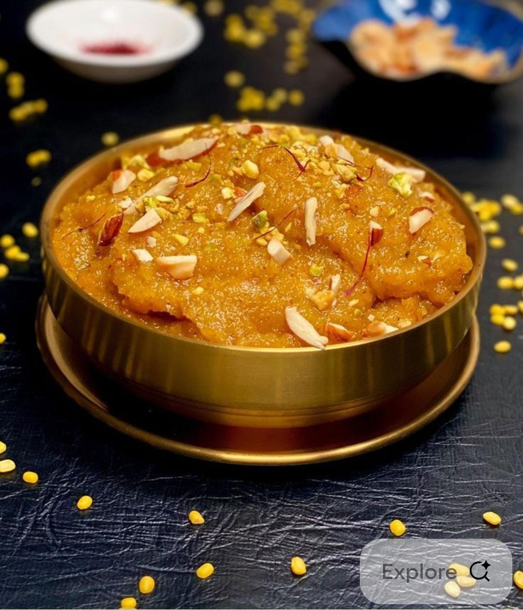
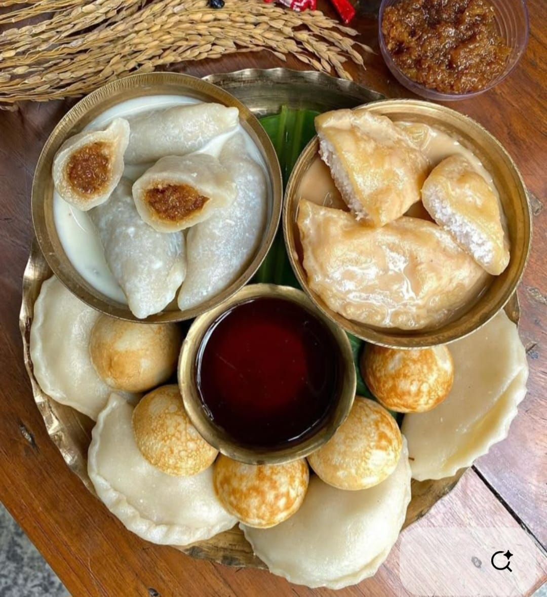
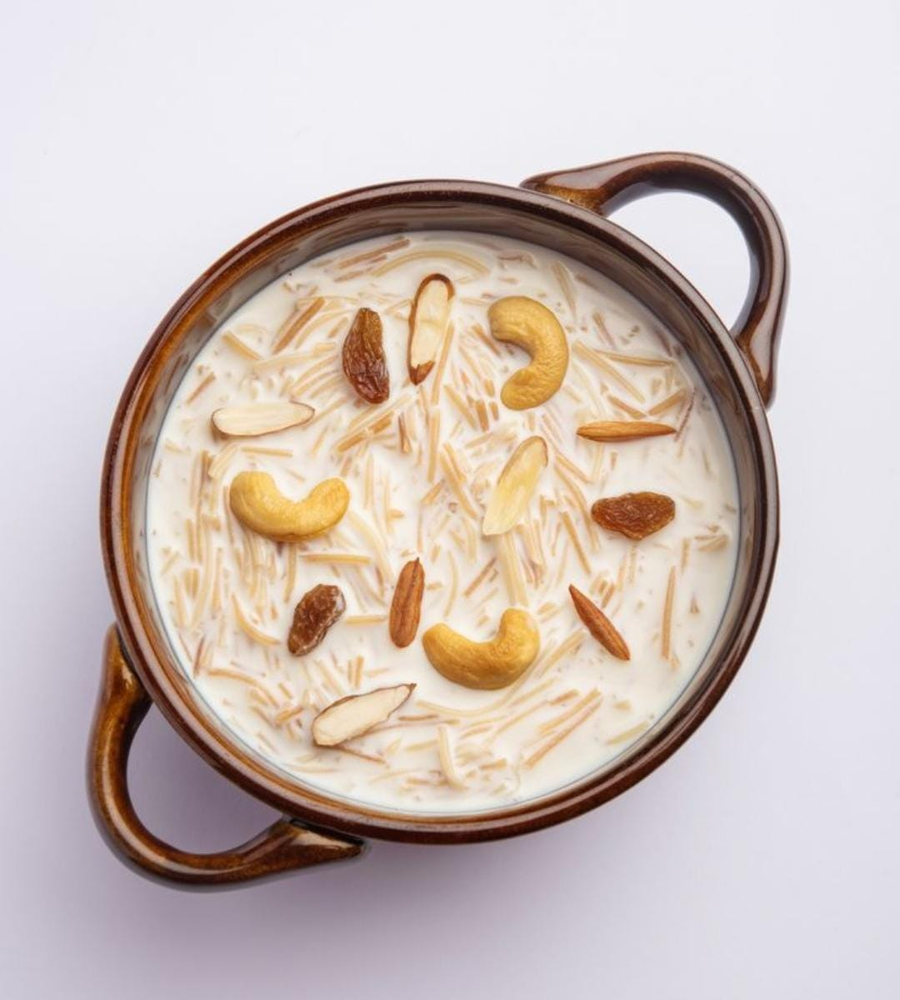

Savoring Every Bite And Love The Festival Feast
Cook These Dishes In festivals.....
Enjoy With Friends Family And With Your Loved Once
Our Top Picks For You
Gujiya

Kheer

Laddo

Moongdal Halwa

Pitha
Pua
Puran Poli
